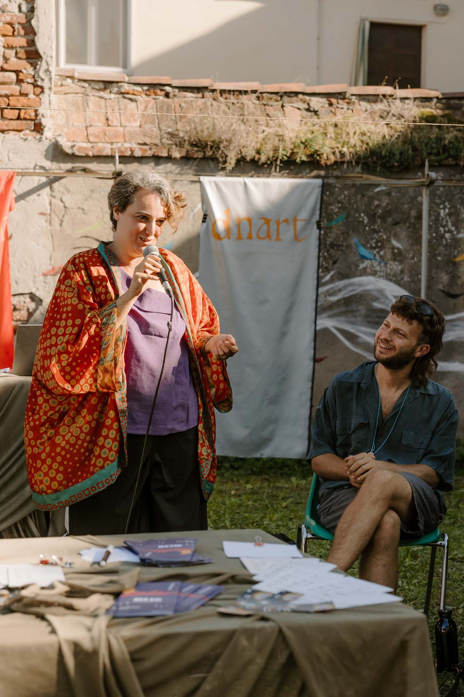
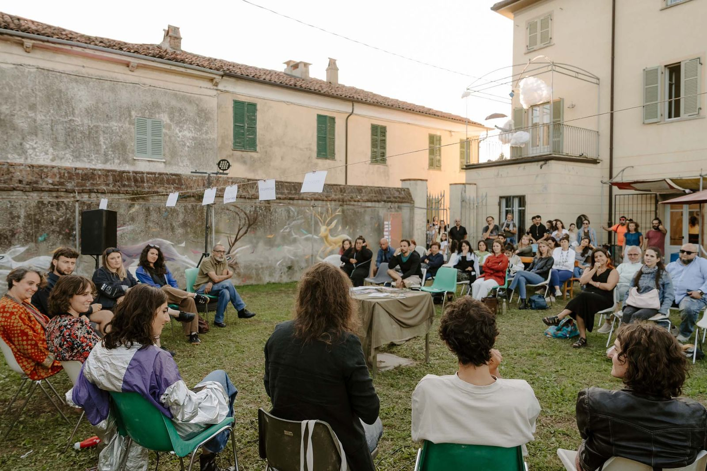
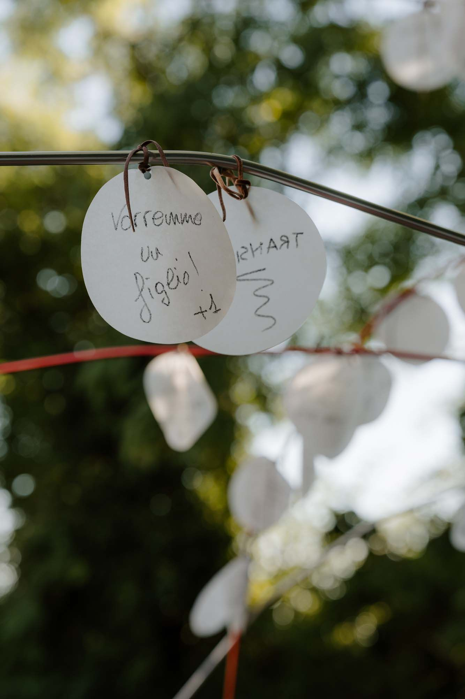
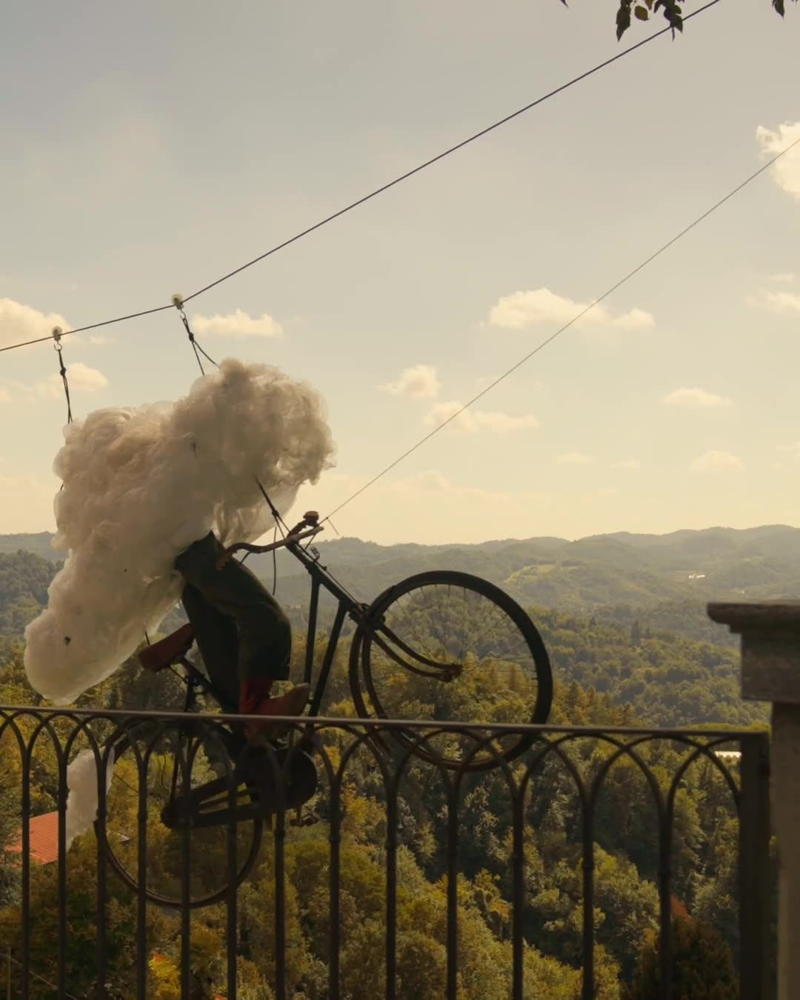
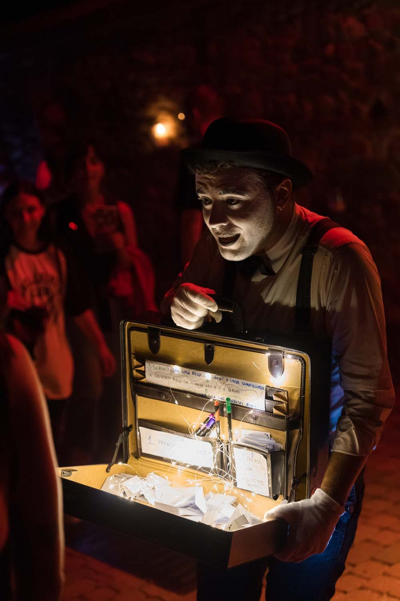
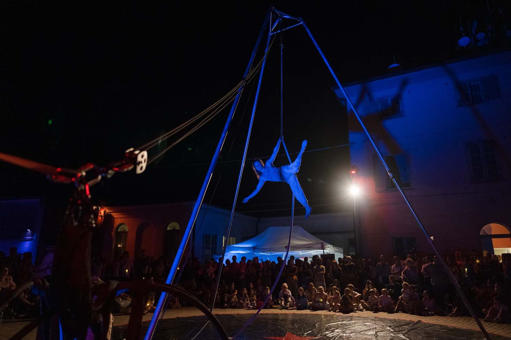

Chi siamo
Chi siamo
Un’associazione, un paese e tante persone che ogni anno costruiscono un festival gratuito.

© Martino Zattarin · Moon Festival, 4ª edizionePerché esistiamo
Un borgo può essere tante cose.
Un luogo che si attraversa, un centro storico da fotografare, un posto che si accende solo ogni tanto. Oppure una domanda: come vogliamo abitare i territori nei prossimi anni?
Il Moon nasce da qui. Ogni anno trasforma San Raffaele Cimena in un teatro a cielo aperto, con un percorso diffuso tra piazze, cortili e vie. Ma il punto non è solo fare spettacoli: è costruire un modo diverso di stare insieme.

© Martino Zattarin · Moon Festival, 4ª edizioneCosa facciamo
Gratuito, non improvvisato.
Il festival lavora su sfide concrete: accesso alla cultura, sostenibilità, formazione delle giovani generazioni e sviluppo locale responsabile.
La gratuità è una scelta centrale. Toglie una barriera e permette a pubblici diversi di incontrare l’arte senza che il costo diventi una selezione. Quando partecipare alla vita culturale rischia di diventare un privilegio, tenere aperto l’accesso è una responsabilità.

© Martino Zattarin · Moon Festival, 4ª edizioneCome lo facciamo
Progettare con ciò che esiste già.
Recuperiamo materiali, riusiamo allestimenti e costruiamo scenografie a partire dagli scarti. Quello che altrove sarebbe un avanzo diventa una mappa, una seduta, un’installazione.
Anche arrivare fa parte del progetto: le Moon Walk sono camminate collettive verso il borgo, per entrare nel territorio prima ancora che nel festival. Nel 2025 oltre il 10% del pubblico ha scelto forme di mobilità sostenibile.

Formazione
Imparare dentro un festival vero.
Ragazze e ragazzi non sono solo pubblico o supporto. Con il Moon Lab entrano nella costruzione del festival, lavorano accanto ad artist* e professionist* e imparano in un contesto reale.
Sicurezza, sostenibilità, accessibilità, comunicazione e competenze tecniche diventano strumenti da provare sul campo, e poi allestimenti e soluzioni concrete per il festival.
Dal 2022
Un’alleanza radicata nel territorio.
Il Moon nasce nel 2022 dall’incontro tra Dnart APS, il Comune e la Pro Loco di San Raffaele Cimena. Il Comune è partner strategico dell’organizzazione; la Pro Loco porta il suo radicamento nel paese.
Attorno al festival si è formato un ecosistema di associazioni, enti pubblici, imprese locali, abitanti, volontar* e artist*: 41 soggetti nel 2026.
I numeri del 2026
Un modello possibile.
Oltre 7.000 presenze, 21 proposte sceniche, 325 candidature artistiche da 16 Paesi, 30 giovani nel Moon Lab e oltre 1.500 kg di materiali recuperati. Numeri importanti, ma non un punto di arrivo: dicono che un festival può essere gratuito, accessibile, sostenibile e capace di attivare comunità, non solo pubblico.
La domanda, quindi, non è solo cosa succede durante il festival. È cosa possiamo costruire prima, durante e dopo, insieme a chi quei territori li vive davvero.

© Ilum collettivo · Moon Festival, 5ª edizioneDnart APS
Una fucina di progetti e idee.
Dnart è un’associazione di promozione sociale nata nel 2008 per promuovere e valorizzare il patrimonio artistico e culturale del territorio, con esperienze partecipative e non convenzionali. È un collettivo di professionist* dell’arte, della cultura e dello spettacolo.
In oltre quindici anni ha intrecciato festival di teatro, residenze artistiche, formazione, laboratori e mostre di arte contemporanea: dal Centro Internazionale di Arti Mimiche e Gestuali alla regia del festival Sognambula in Toscana, fino al Moon. Al centro ci sono le nuove generazioni e l’arte come strumento di trasformazione sociale.

© Ilum collettivo · Moon Festival, 5ª edizioneLe persone
Chi fa il Moon.
[STAFF 2027: NOMI E RUOLI]